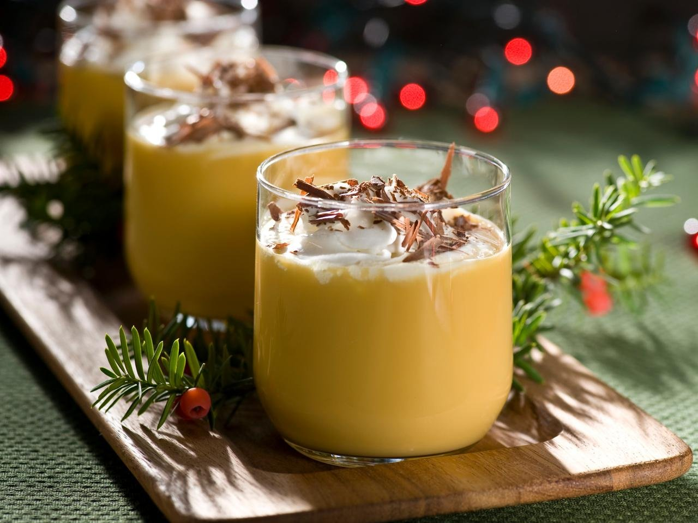

Weisßee Marzipan-Schoko-Likör
-

15min
-

einfach
-

- 150
- g
- Schokolade, weiß
- 100
- g
- Zucker
- 1
- stk
- Ei
- 500
- g
- Sahne
- 300
- g
- Mandellikör
Nährwerte pro Portion
| kcal | Eiweiß | Fett | KH |
|---|---|---|---|
| 127 | 3,26g | 7,51g | 5,42g |
Zubereitung
-
Gesamtzeit ca 15 Minuten
-
Zubereitungszeit ca 15 Minuten
- Brich die weiße Schokolade in kleine Stücke und lasse sie im Mixtopf zu feinen Krümeln zerkleinern – wie frisch gefallener Schnee.
- Füge Zucker, ein Ei und 250 g Sahne hinzu und schlage die Mischung cremig auf. Die Küche beginnt schon herrlich nach Weihnachten zu duften.
- Gieße den Mandellikör dazu und lasse alles 7 Minuten bei 90°C erwärmen und rühren. Ein Hauch von Marzipan liegt in der Luft – festliche Stimmung pur!
- Die restlichen 250 g Sahne hinzufügen und 10 Sekunden verrühren – der Likör wird samtig weich wie eine Schneedecke.
- Fülle den warmen Likör in vier heiß ausgespülte Flaschen und dekoriere sie nach Lust und Laune. Serviere ihn in gemütlicher Runde – Prost auf die schönste Zeit des Jahres!
Rezept erstellt von